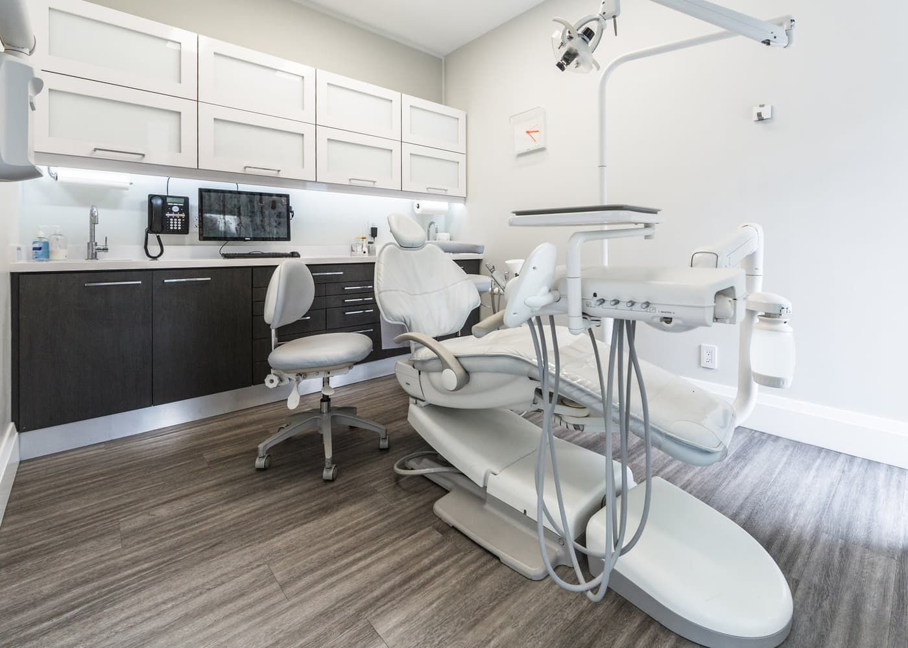
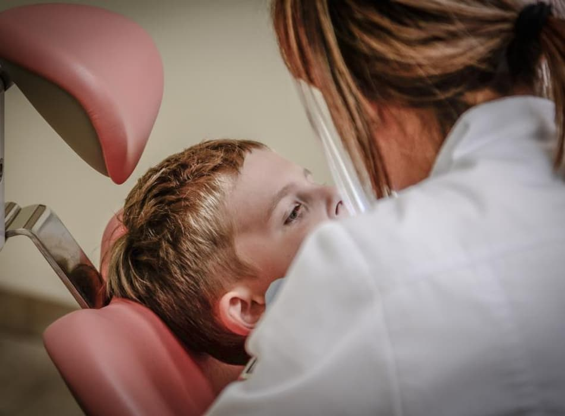
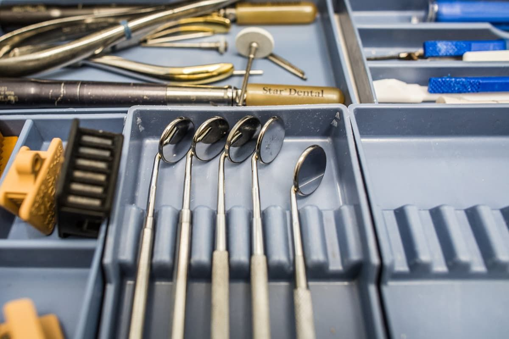
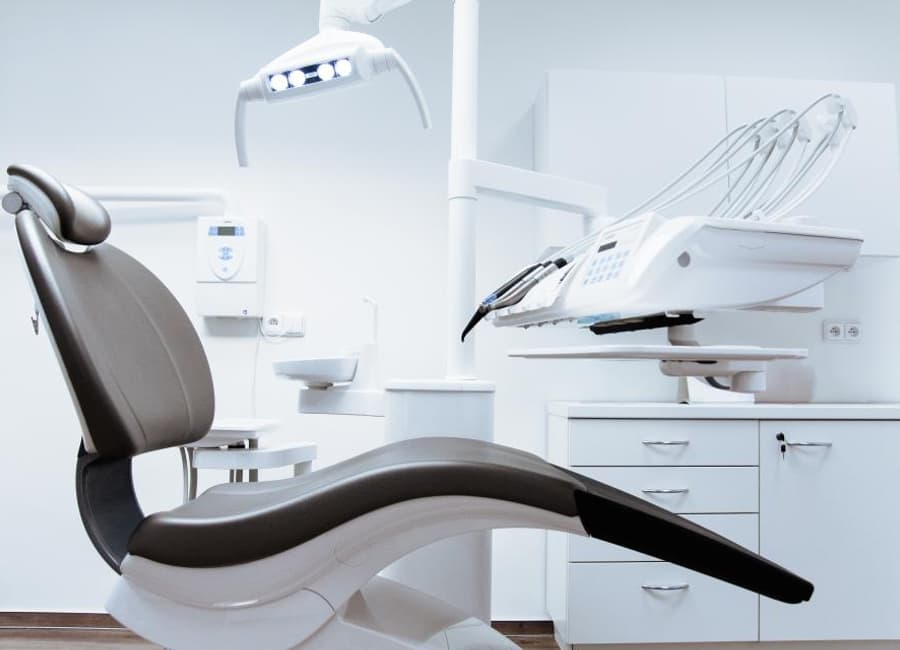
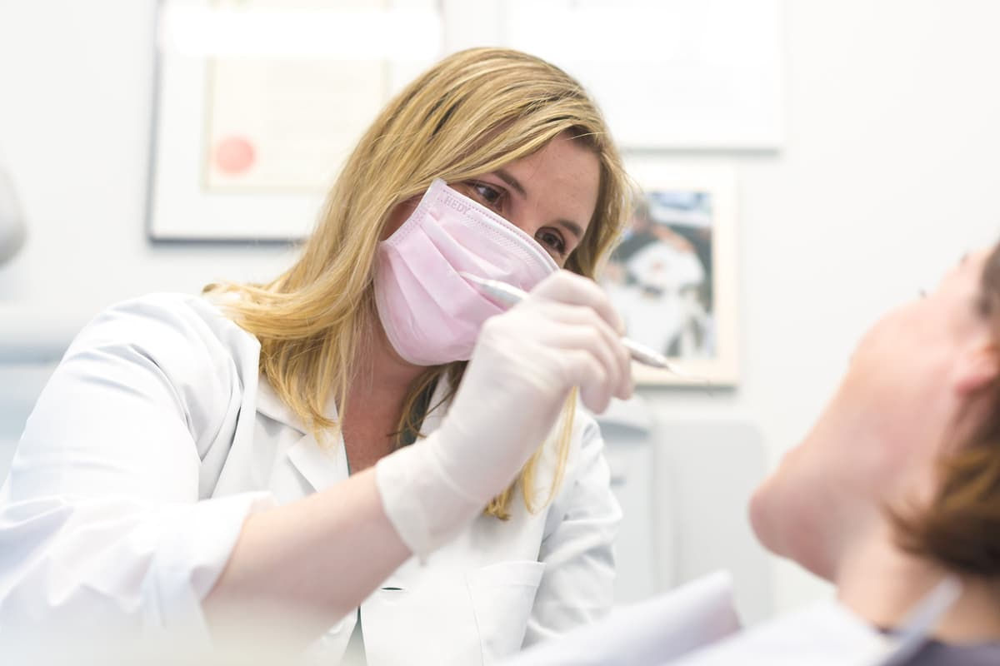

Clínica geral e prevenção
Limpeza, restauração, tratamento de cárie e o retorno de acompanhamento que evita que o problema volte maior.
Consulta inicial de 40 minutosMeridiano é uma clínica odontológica no Jardim Esplanada, em São José dos Campos. Avaliação com plano escrito, orçamento explicado item por item e nenhum procedimento iniciado no mesmo dia sem a sua decisão.

Seis especialidades sob o mesmo teto e no mesmo prontuário. Se o seu caso precisar de mais de uma, a ordem dos tratamentos é combinada com você antes de começar.
Limpeza, restauração, tratamento de cárie e o retorno de acompanhamento que evita que o problema volte maior.
Consulta inicial de 40 minutosPlanejamento com tomografia, cirurgia e prótese acompanhadas pela mesma equipe do começo ao fim.
Avaliação com exame de imagemAparelho fixo e alinhador transparente, com previsão de tempo apresentada antes da instalação.
Manutenção mensal agendadaTratamento de canal com anestesia bem conduzida e sessões planejadas para caber na sua rotina.
Atendimento de urgênciaPrimeira consulta da criança sem susto: ela conhece o consultório, senta na cadeira e só depois é examinada.
Acompanhante sempre na salaClareamento, facetas e ajustes de forma, com prévia do resultado antes de qualquer desgaste no dente.
Simulação antes de decidirA avaliação inicial dura cerca de quarenta minutos. Ela existe para você entender o seu caso e sair com um plano na mão, mesmo que decida tratar em outro lugar.
Antes do exame, a gente pergunta o que dói, o que te incomoda esteticamente, o que você já tratou e que remédios usa. Muita coisa do plano se decide aqui.
Exame de boca completo e, quando necessário, radiografia feita na própria clínica. Você vê as imagens na tela junto com o dentista, não depois por e-mail.
Cada procedimento indicado aparece com a razão, a ordem sugerida e o tempo estimado. Se houver mais de um caminho possível, os dois são apresentados.
O orçamento é entregue item por item, com as formas de pagamento e a validade. Você leva para casa e decide com calma: nada é iniciado no mesmo dia por pressão.

As perguntas que as pessoas têm vergonha de fazer na recepção, respondidas aqui.
| Esterilização | Instrumental em autoclave, com ciclo registrado e embalagem aberta na frente do paciente. |
|---|---|
| Tempo de consulta | Agenda com intervalo entre pacientes, para o horário marcado ser o horário real. |
| Imagem | Radiografia digital na própria clínica, sem precisar ir a outro endereço. |
| Prontuário | Histórico único: qualquer profissional da equipe vê o que já foi feito antes de propor algo novo. |
| Acessibilidade | Entrada térrea sem degrau, corredor largo e banheiro adaptado. |
| Convênios | Atendimento particular e reembolso; confirme o seu plano por WhatsApp antes de agendar. |



A mesma pessoa que avalia é a que trata. Você não conhece um profissional na consulta e outro na hora do procedimento.
Conduz as avaliações iniciais e os casos de implante, do planejamento à prótese final.
Implantodontia · 14 anosOrtodontia de adultos e adolescentes, com controle de tempo de tratamento apresentado no início.
Ortodontia · 11 anosAtende crianças e adolescentes, e conduz a primeira consulta infantil sem procedimento no dia.
Odontopediatria · 9 anosRegistros profissionais no CRO-SP ficam expostos na recepção e podem ser conferidos a qualquer momento.
Se a sua não estiver aqui, mande por WhatsApp. Responder pergunta antes da consulta faz parte do atendimento.
A maior parte dos procedimentos é feita com anestesia local, e a aplicação é precedida de anestésico tópico para reduzir o incômodo da picada. Você combina um sinal com o dentista para pedir pausa a qualquer momento.
Não é obrigatório. Se você já tem radiografia ou tomografia recente, leve, porque evita repetir. Caso contrário, a imagem necessária é feita aqui mesmo.
Depende do caso, e é justamente isso que a avaliação responde. O plano entregue a você traz o número de sessões previstas e o intervalo entre elas, por escrito.
Pode. A recepção tem espaço para acompanhante e a equipe fica de olho enquanto você é atendido. Para consultas longas, vale avisar antes para reservarmos um horário mais tranquilo.
Casos de dor aguda têm encaixe no mesmo dia sempre que houver agenda. Mande mensagem descrevendo o que está sentindo e a recepção retorna com o horário possível.
Avenida São João, 2200, sala 4
Jardim Esplanada, São José dos Campos, SP
| Segunda a sexta | 8h às 19h |
|---|---|
| Sábado | 8h às 13h |
| Domingo e feriados | fechado |
Estacionamento próprio na lateral do prédio e ponto de ônibus a duas quadras. Para quem vem de fora da cidade, a saída da rodovia fica a dez minutos.
Esta página é um modelo demonstrativo. Meridiano Odontologia é uma clínica fictícia, criada para mostrar como um site do setor pode ser apresentado; endereço, nomes e contatos acima são ilustrativos.